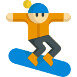
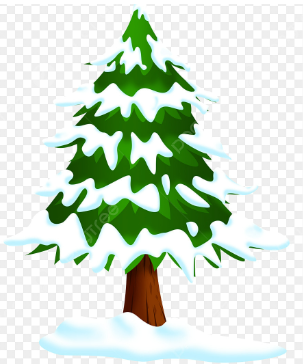

History of Snowboarding
Snowboarding originated in the United States in the 1960s and it was essentially two skis straped together and was called a 'snurfer'.The sport gained traction in the 1970s and 80s, with pioneers like Jake Burton and Tom Sims developing boards and bindings, making jumping with snowboards possible. It has since evolved into a popular winter sport worldwide.
Learn more by clicking the video below.
Snowboarding Techniques
Snowboarding techniques can be split into two main categories, carving and tricking. There are different types of snowboards designed for different styles, such as freestyle(for tricks), freeride(for carving) and all-mountain(all-rounder). Carving involves making smooth, controlled turns on the snow, while tricks involve jumps, spins, and flips but in order to do tricks, one must learn carving first as it allows one to make sharp turns smoothly which is needed for doing tricks. Mastering these techniques requires practice and balance.
Learn more about carving by clicking the video below.
Learn more about tricks by clicking the video below.
Snowboard Minigame
Test your snowboarding skills with this minigame! Use the buttons or arrow keys to move.
 